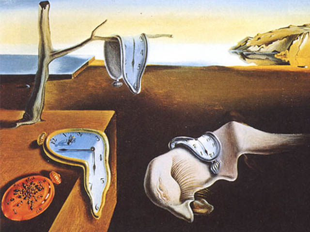
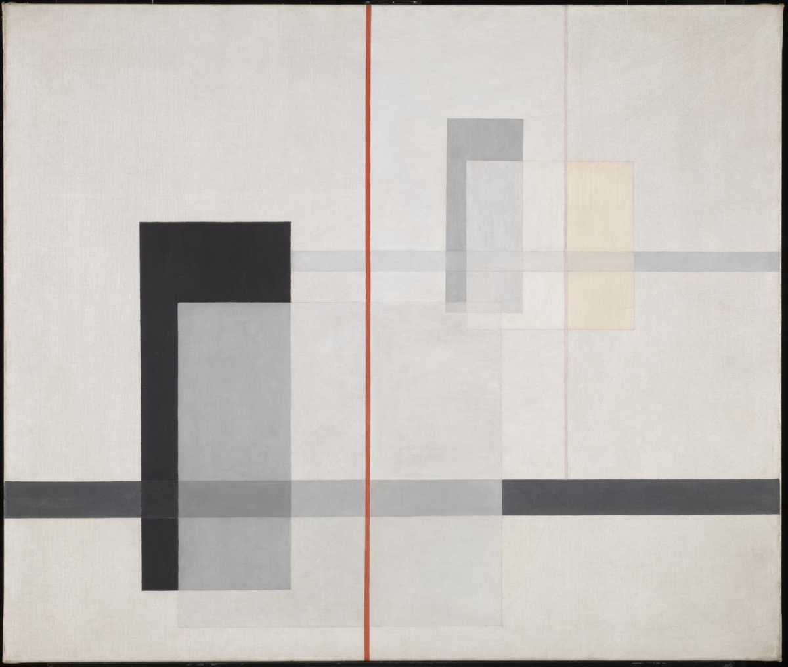
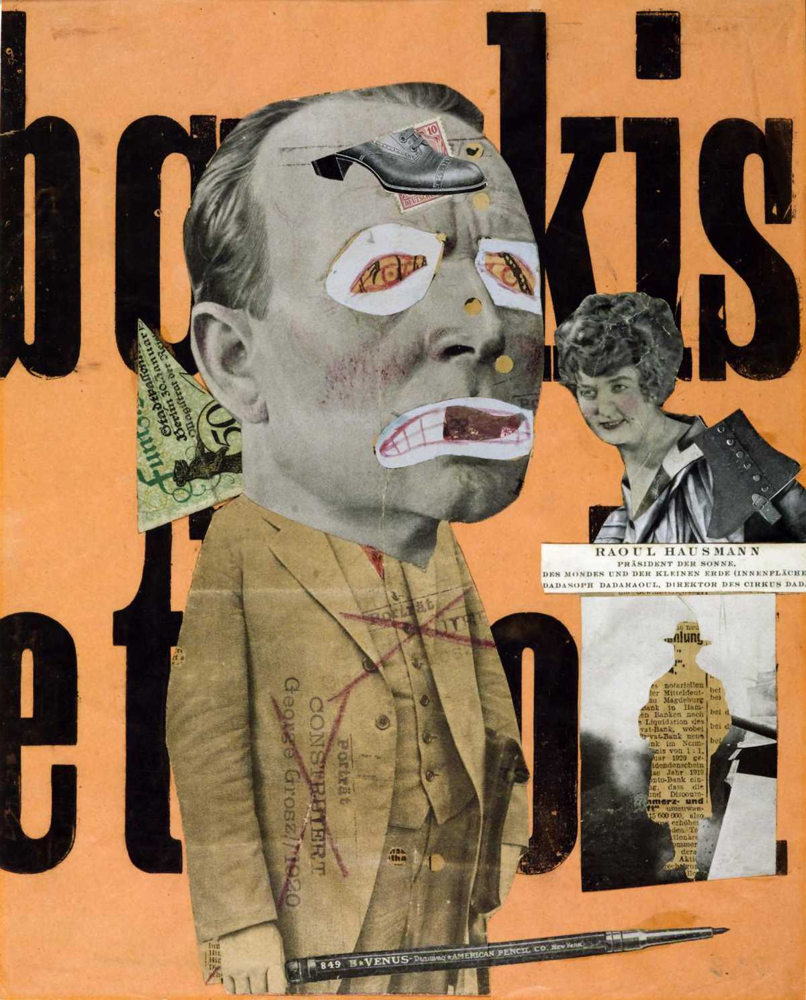
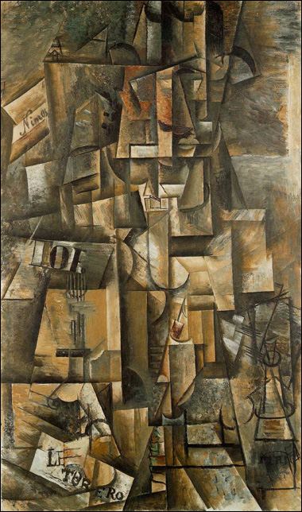

⎯⎯⎯⎯Modernism⎯⎯⎯⎯
According to Britannica, Modernism, in the fine arts, a break with the past and the concurrent search for new forms of expression. Modernism fostered a period of experimentation in the arts from the late 19th to the mid-20th century, particularly in the years following World War I.




Impressionism, Post-Impressionism, Cubism, Futurism, Expressionism, Constructivism, de Stijl, and Abstract Expressionism—are generally defined as Modernist. Over the span of these movements, artists increasingly focused on the intrinsic qualities of their media—e.g., line, form, and color—and moved away from inherited notions of art.
continue your journey:
part seven
Simple Div Link
Learn more about the art of the modernist movement here